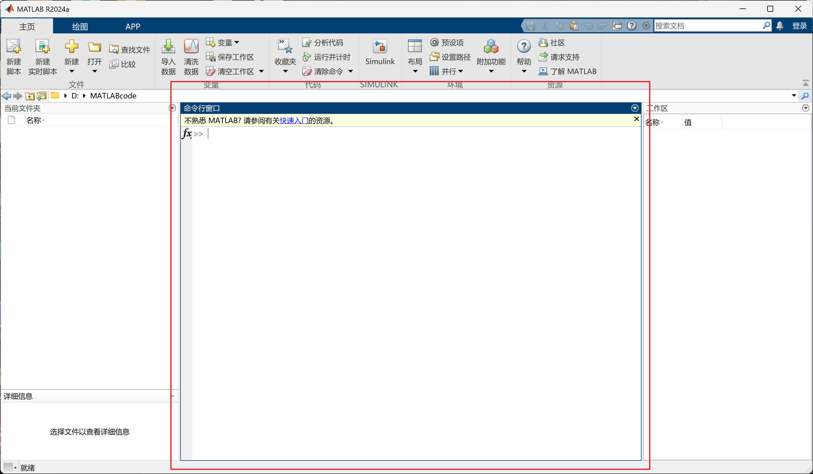
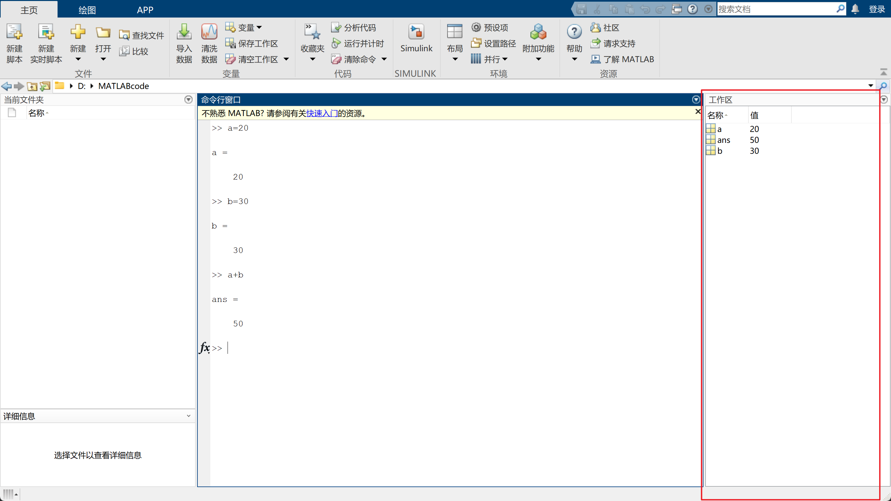
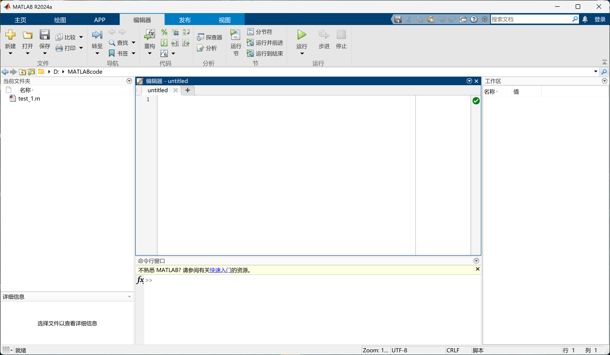
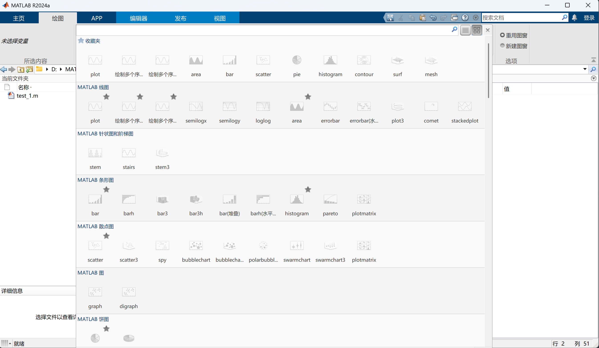
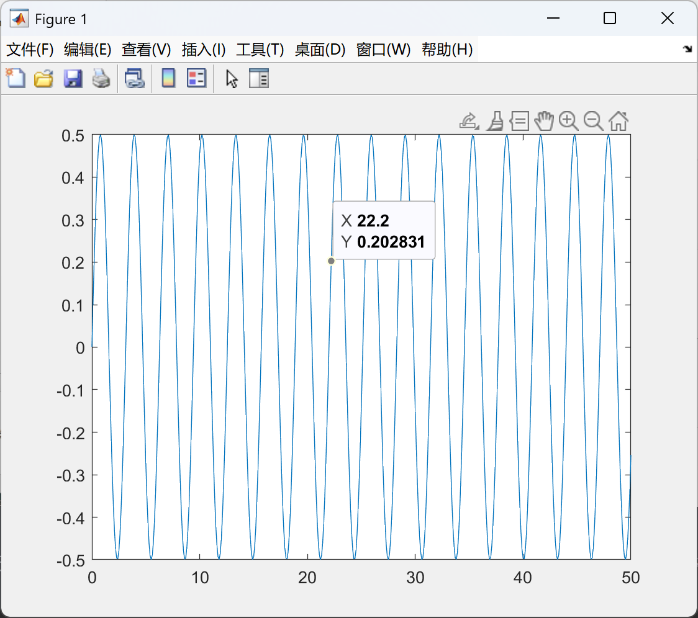

Chapter 1 MATLAB基础：工程计算入门
1.1 开始使用MATLAB
1.1.1 开发环境配置
如果是第一次使用MATLAB，启动后会显示一个这样的默认工作界面
这个界面包括MATLAB的多个核心组件，它们共同提供了一个集成的工作平台（IDE），方便用户进行工作。以下是MATLAB开发环境的主要部分：
- 命令行窗口(Command Window)：这是MATLAB的交互式执行窗口，在这里输入命令或代码并即时查看计算结果，适用于快速调试和验证
 2. 工作区(Workspace)：显示当前会话中所有变量的值和类型，有助于跟踪和管理已有的数据
比如在命令行输入一个赋值语句后按Enter（回车）执行，工作区就会记录新的变量和它对应的值。对于a+b这种变量全被赋值的运算命令，MATLAB会很贴心地自己生成一个ans(answer)变量，并给ans赋值为运算答案
提示
自己在命令行窗口输入试试看！☝️🤓
 3. 当前目录窗口和“主页”选项卡
-
当前目录窗口在命令行窗口的上方，有一个显示当前工作目录路径的地址栏，点击或直接输入路径来切换工作目录，在命令行窗口左侧是当前文件夹窗口 (Current Folder Window)，这个窗口会列出当前工作目录下的所有文件和子文件夹，双击文件即可在MATLAB中打开（例如，
.m文件会在编辑器中打开，.mat文件会在变量编辑器中打开） -
“主页”选项卡 (Home Tab) 是 MATLAB 工具条的核心部分，提供许多常用功能的按钮入口，例如“新建脚本”、“新建实时脚本”、“打开”、“保存”、“运行”等。我们可以通过点击这些按钮，利用图形界面快速执行文件管理、代码运行等操作。当选择
新建脚本/实时脚本，就会触发“编辑器”界面
4. 编辑器(Editor)：代码编辑器是编写、管理脚本文件 (.m 文件) 和函数的主要工具，我们主要在编辑器里进行脚本编写。它提供了丰富的功能来提高编码效率，包括语法高亮（让代码结构清晰）、智能代码补全/提示（减少输入错误，加快速度）和自动缩进（保持代码整洁）。编辑器还集成了强大的调试工具，例如可以方便地设置断点和逐行执行代码，结合工作区查看变量状态，从而高效地查找和修正程序中的错误。
 5. “绘图”选项卡：绘制数据图形。单击右侧的下拉按钮，从下拉列表中可以选择不同的绘制命令（我们也可以在编写脚本时用命令行调用这些绘制命令）
 6. 应用程序设计工具(App Designer)：App Designer 是 MATLAB 中用于创建专业的图形用户界面 (GUI) 的交互式环境。拖放组件和编写回调函数可以让我们轻松地设计和构建交互式应用程序，无需深入了解复杂的 GUI 编程细节。在后面的第五小节将展开介绍
工作界面就先认识到这里，我想此时你可能正开着编辑器吧，不如先简单敲一个最基本的脚本，像下面这样：
然后点击“运行”（需要保存当前文件）或用鼠标左键拖动选中这三行代码&&然后右键&&选择在命令行窗口中执行所选内容 F9（首选项）（无需保存即可执行），运行这个脚本。不出意外的话会得到一个Figure 1窗口，里面是该脚本绘制的图像（图中显示的XY值是随鼠标在图像上移动而变化的，试试看）

以下是对代码段的解释
x = 0:0.1:50;使用冒号运算符创建了一个从 0 到 50，步长为 0.1 的向量， 这是MATLAB 中创建数值序列的常用且简洁的方式
y = sin(x).*cos(x);使用了数组乘法.*，处理向量或矩阵对应元素相乘的标准方法，体现了 MATLAB 的数组运算特性
plot(x,y)绘制二维图形的基本函数不要担心，接下来的基础语法小节会让你学会这些语法知识
以上是一个基础绘图的例子，为了让大家尽快感受到MATLAB 强大的可视化能力，这里再提供一个已经写好的示例脚本，下载到本地后用MATLAB打开并运行，我想至少会有不错的视觉效果
这也仅仅是MATLAB核心组件的简单绘图效果，不知能否让你感受到它的神奇之处。
思考
注意到Figure 1窗口的图像部分右上角的几个按钮了吗？
你可以尝试将鼠标放置在上面查看它们的功能说明，然后分别尝试一下(●'◡'●)
1.1.2 基础操作规范
在开始编写更多代码之前，我们需要了解一些 MATLAB 的基础操作规范：
- 获取帮助文档：
doc function_name：输入doc命令加上函数名，可以打开该函数的官方帮助文档，查看其详细说明、用法示例和相关函数。例如：lookfor keyword：如果只记得某个功能的关键词，可以使用 lookfor 命令进行搜索。例如：
- 添加代码注释：
良好的代码注释能极大提高代码的可读性和可维护性。
%：单行注释。在代码行前或行后使用%，该符号到行尾的所有内容都会被 MATLAB 忽略。%%：分节注释（Code Sections）。在编辑器中，以%%开头可以创建一个代码节。代码节有助于组织代码，并且可以使用 Ctrl+Enter 快捷键单独运行当前节的代码，非常方便调试和分步执行。
提示
强烈建议养成写注释的好习惯，不然自己回头看自己写的代码时会非常痛苦（这是什么、那又是什么）
使用Ctrl+Enter快捷键单独运行当前节的代码，起到调试的作用（便于确定问题出现在哪一小节的意思）
- 清空界面与工作区：
clc：清空命令行窗口的所有显示内容，让界面更整洁。clear：清空工作区的所有变量。如果想清除特定变量，可以使用clear var1 var2的形式
- 管理工作目录： MATLAB 在执行脚本或函数时，会首先在当前工作目录中查找文件。时刻注意保持查看的脚本和所需数据文件都位于当前工作目录，通过界面上方的路径栏切换目录。
- 保存与加载数据：
save filename.mat：将当前工作区中的所有变量保存到一个名为filename.mat的二进制文件中。load filename.mat：从指定的.mat文件中加载变量到当前工作区。
- 使用分号抑制输出：
命令行窗口中默认显示每行代码的计算结果，但在脚本中，不想或没必要看到每一步的中间结果，可以在语句末尾加上分号;来抑制输出。这是一个非常常见的 MATLAB 编程习惯。
1.2 基础语法与数据结构
之前有提到过MATLAB语法与C语言的相似性，别紧张，MATLAB的语法非常简单，无论有没有编程基础，都可以轻松上手。只不过以下内容学习过C语言的同学可以进行快速浏览，也能对比发现MATLAB的一些不同点，相对宽松的语法和简洁的代码结构使得MATLAB成为许多科学计算和工程应用的首选。
提示
下面的内容可以在编辑器中编写脚本，用注释的形式记录笔记，方便以后查阅
1.2.1 变量命名与基础数组概念
MATLAB的变量命名规则相对宽松，但为了提高代码的可读性和规范性，建议遵循一些最佳实践：
- 变量名必须以字母开头，后跟字母、数字或下划线（
_） - 变量名应该具有描述性，避免使用单个字母。常见的例外包括用于表示虚数单位的
i或j，以及用于循环计数的k、m、n等 - 变量名区分大小写，
A和a是不同的变量 - 避免使用 MATLAB 内置函数、关键字或常量的名称作为变量名（例如
sin,plot,for,pi等），否则会覆盖其原有功能 - 变量名应尽量使用有意义的单词或短语，而不是简单的缩写
数组是MATLAB的基础
在 MATLAB 中，数组（Array）是处理和存储数据的最基本单位和核心概念。简单来说，数组就是一个用来存放一系列相关数据的地方，这些数据可以是数字、文本、逻辑值等。即使是一个单独的数值（比如5）或单个字符（比如'a'），在 MATLAB 内部也被看作是一个 1x1 的数组（也称作标量）。
规定用方括号[]来创建最常见的数组。这类使用[]创建的数组通常是同质的，也就是说它们里面的所有元素都属于同一类型（例如，一个数组里所有元素都是数字，或者所有元素都是字符，或者所有元素都是逻辑值）。
MATLAB 的数组可以是不同维度的：
- 一维数组，通常称为向量（Vector），可以表示一行或一列数据
- 二维数组，通常称为矩阵（Matrix），可以表示一个表格状的数据
- MATLAB 也支持创建更高维度的数组
理解数组的概念是学习 MATLAB 的关键，因为 MATLAB 的大部分强大功能和操作都是针对数组进行的（这种方式通常被称为向量化操作）。接下来的部分将介绍 MATLAB 支持的各种可以存储在数组（以及其他更复杂容器）中的数据类型。
1.2.2 基本数据类型
MATLAB支持的常见数据类型包括：
- 数值类型：如
double（默认数值类型，双精度浮点型），single（单精度浮点型），int8，uint8等（不同位数的整型）。
提示
为什么会有这么多不同的数值类型呢？简单来说，计算机存储数字的方式有很多种，这些不同的数值类型主要区别于它们能表示的数值范围（能表示多大的数字）和精度（对于小数来说，能精确到小数点后多少位），以及占用的内存空间大小。
double和single主要用来存储带有小数的数字（浮点数），double比single精度更高，也是 MATLAB 进行数值计算时默认使用的类型。
int和uint类型（如int8,uint32等）用来存储不带小数的整数。名称中的数字（如8,16,32,64）表示用来存储这个数字所需的“位数”，位数越多，能表示的整数范围就越大。u开头的 uint表示“无符号整数”，只能存储非负整数（0和正整数）。
对于大多数日常计算和初学者的任务，直接使用默认的double类型通常就足够了。只有在处理需要严格控制内存使用、或者需要精确表示特定范围的整数时，才需要考虑使用其他数值类型。
再提示
也就是说，在日常计算中，我们不需要像double x;一样来声明变量类型，MATLAB会自动选择合适的类型。
- 字符数组 (
char)：使用单引号'...'定义，通常用于存储文本或字符序列 - 字符串数组 (
string)：使用双引号"..."定义，是 MATLAB R2016b 版本引入的新型字符串类型，功能更强大
为什么字符和字符串也叫“数组”？
对于刚接触 MATLAB 的初学者（特别是像笔者一样学过其他编程语言的朋友），可能会对“字符数组”和“字符串数组”的叫法感到一丝疑惑。在高级语言里，字符串大多数时候被当作一种基本类型或一个独立的对象。
之前提到过，数组（或者说矩阵）是MATLAB最核心的数据结构。 它的理念是尽可能地把所有类型的数据都用数组的形式来组织和处理，这样可以更方便地进行批量操作和矩阵运算。
-
字符数组 (
char)：'hello'这一串字符，在 MATLAB 看来，就是一个由 5 个字符元素按顺序组成的 1x5 的数组。每个位置放一个字符。所以称为“字符数组”是非常直观的。 -
字符串数组 (
string)：string类型更像是一个“存储字符串的容器”。即使你只有一个字符串，比如"world"，MATLAB 把它看作一个包含一个元素的数组，这个元素就是完整的字符串"world"。如果有多个字符串，例如["apple", "banana", "cherry"]，这就是一个 1x3 的字符串数组，每个“单元”里放了一个完整的字符串。
对以上文字理解为“由字符组成的数组”和“由字符串组成的数组”就好。这是 MATLAB 处理文本数据的一种方式，和它处理数值数据（数值数组）的思路是一致的，都是放在数组框架下进行管理。习惯了这一点，你会发现 MATLAB 的很多操作都变得很好理解。
- 逻辑型（
logical）：如true和false - 元胞数组（
cell arrays）：使用花括号{}定义，可以存储不同类型的数据 - 结构体（
structs）：用于存储具有不同字段的关联数据，字段可以是不同类型
示例：
% 合法变量名示例
velocity = 10.5; % 描述性变量名
CO2_level = 415.7; % 含数字和下划线
Temp_2023 = [20.1, 22.3, 19.8]; % 时间序列数据
loop_index = 1; % 常用的循环变量名
% 避免使用的变量名示例 (不建议这样做)
% sin = 5; % 覆盖内置函数 sin
% for = 10; % 关键字，非法
% 数据类型演示(两个元胞数组，一个存放了相同类型的数据，一个存放了不同类型的数据)
data_types_list = {'数值 (double)', '字符数组 (char)', '字符串数组 (string)', '逻辑型 (logical)', '元胞数组 (cell)', '结构体 (struct)'};
sample_data_list = {3.14, '这是一个字符数组', "这是一个字符串数组", true, {1, 'text', [2 3]}, struct('name','Alice','age',30)};
% class() 函数用于查看变量的数据类型，它返回数据类型的名称（一个字符数组）
% fprintf 函数用于格式化输出，%s 适用于打印字符串（包括 class()函数返回的类型名称）
fprintf('变量 3.14 的类型是: %s\n', class(3.14));
fprintf('变量 ''abc'' 的类型是: %s\n', class('abc'));
fprintf('变量 "xyz" 的类型是: %s\n', class("xyz"));
fprintf('变量 true 的类型是: %s\n', class(true));
fprintf('变量 {1} 的类型是: %s\n', class({1}));
fprintf('变量 struct() 的类型是: %s\n', class(struct()));
% 或者继续使用表格展示示例数据（需要调整以匹配新的列表）
% 为了清晰，将列表和示例数据分别放入表格中
dataTypeNames = data_types_list';
sampleValues = sample_data_list';
disp('常见数据类型列表:');
disp(cell2table(dataTypeNames, 'VariableNames', {'数据类型'}));
disp('不同数据类型的示例值:');
% cell2table对于复杂的数据类型（如结构体）可能显示不全，但对于基本类型没问题
% 或者直接用 cell 显示
disp(sample_data_list);
% 如果坚持用一个表格展示，需要注意结构体的显示限制
% combined_data = [dataTypeNames, sampleValues];
% disp(cell2table(combined_data, 'VariableNames', {'数据类型', '示例值'})); % 可能显示不全
1.2.3 元胞数组 (Cell Arrays)
除了前面提到的基础数组 ([]) 外，MATLAB 还提供了其他更灵活的数据容器：元胞数组和结构体，用来存储不同类型的数据。
- 元胞数组(
cell arrays)：- 特点： 元胞数组是一种特殊的数组，它的每一个“元胞”（Cell）可以存储任意类型、任意大小的数据。这与基础数组 (
[]) 只能存储同类型数据不同。元胞数组常用于存储混合数据，或者需要一个可以存放不同维度矩阵的数组时 - 创建： 使用花括号
{}来创建元胞数组 - 访问：
- 使用圆括号
()进行元胞索引，访问结果是一个子元胞数组 - 使用花括号
{}进行内容索引，访问结果是该元胞中存储的实际数据。这是元胞数组访问中一个易混淆的点
- 使用圆括号
- 添加/修改元素：可以像普通数组一样使用索引添加或修改元胞内容
- 特点： 元胞数组是一种特殊的数组，它的每一个“元胞”（Cell）可以存储任意类型、任意大小的数据。这与基础数组 (
示例：
% 创建一个元胞数组
C = {1, '这是一个字符数组', [1, 2; 3, 4], true}; % 存储了数值、字符数组、矩阵、逻辑值
disp(C); % 显示整个元胞数组的结构
% 元胞数组访问示例
% 使用 () 访问 - 返回一个元胞数组
sub_C = C(2); % 访问第二个元胞，sub_C 是一个 1x1 的元胞数组 { '这是一个字符数组' }
disp(sub_C);
disp(class(sub_C)); % 显示 'cell'
% 使用 {} 访问 - 返回元胞中的内容
content_of_cell = C{2}; % 访问第二个元胞的内容，content_of_cell 是 '这是一个字符数组' (char 类型)
disp(content_of_cell);
disp(class(content_of_cell)); % 显示 'char'
% 访问二维元胞数组
C_2D = {11, 'aa'; [5 6], false};
disp(C_2D{1,2}); % 访问第一行第二列元胞的内容 'aa'
C{end+1} = rand(3,1); % 在末尾添加一个新的元胞，内容是一个 3x1 的随机数向量
C{1, 3} = "这是一个字符串"; % 修改第一行第三列的元胞内容 (如果 C_2D 足够大或已定义)
提示:()vs{}访问元胞数组
记住：圆括号()给你“元胞盒子本身”（可能是一个或多个盒子），而花括号{} 打开“元胞盒子”，取出里面的“东西”（实际数据）。对于有其他语言数组或列表经验的朋友，这个双重索引方式是 MATLAB 元胞数组特有的，需要特别注意区分。
1.2.4 结构体 (Structs)
- 结构体（
structs）：- 特点：结构体是一种用来组织不同类型数据的容器，通过命名的字段（field）来存储数据。它非常适合用来表示具有多个属性的“对象”或记录
- 创建：使用
struct+点号.来创建结构体、为结构体添加字段并赋值 - 访问：使用点号
.加上字段名来访问特定字段的数据
示例：
% 创建一个表示气象站信息的结构体
station.name = '北京';
station.temperature = [1.1, 2.2, 3.3]; % 温度数组 (数值向量)
station.location = [39.9042, 116.4074]; % 经纬度 (数值向量)
station.isActive = true; % 逻辑值
% 访问结构体的字段
disp(station.name); % 显示 '北京'
disp(station.temperature); % 显示 [1.1, 2.2, 3.3]
% 修改结构体的字段
station.temperature(end+1) = 4.5; % 给温度数组添加一个值
station.elevation = 54.6; % 添加一个新字段
% 结构体数组 (补充)
% 可以创建结构体数组，每个元素是一个结构体
station(2).name = '上海';
station(2).temperature = [5.5, 6.6];
station(2).location = [31.2304, 121.4737];
% 注意：结构体数组中同一位置的结构体必须有相同的字段名集合（字段数量可以不同，但通常建议保持一致）
disp(station(1).name); % 显示 '北京'
disp(station(2).location); % 显示 [31.2304, 121.4737]
结构体与元胞数组的选择
当需要用名字来区分和访问数据项时，使用结构体更方便（例如station.name）。当需要用编号或索引来访问不同数据项，且数据项类型多样时，元胞数组更合适（例如C{1},C{2}）。
1.3 矩阵/数组操作基础
MATLAB的核心是矩阵，下面介绍如何构造矩阵和进行基本的四则运算。
1.3.1 矩阵构造与基本运算
-
矩阵构造：可以通过方括号
[]来直接输入数据构造矩阵- 元素之间用逗号
,或空格分隔表示同一行内的不同列 - 行之间用分号
;分隔
A = [1, 2; 3, 4]; % 创建一个 2x2 的矩阵 B = [5; 6]; % 创建一个 2x1 的列向量 (2行1列的矩阵) C = [7, 8]; % 创建一个 1x2 的行向量 (1行2列的矩阵) % 通过已有矩阵拼接构造新矩阵 D = [A, B]; % 将 A 和 B 水平拼接，要求行数相同，结果是一个 2x3 的矩阵 E = [C; [9, 10]]; % 将 C 和 [9, 10] 垂直拼接，要求列数相同，结果是一个 2x2 的矩阵 % 常用的内置矩阵构造函数 zeros(2, 3) % 创建一个 2x3 的全零矩阵 ones(1, 4) % 创建一个 1x4 的全一向量 eye(3) % 创建一个 3x3 的单位矩阵 rand(2) % 创建一个 2x2 的元素在 (0, 1) 之间均匀分布的随机矩阵 randn(1, 5) % 创建一个 1x5 的元素符合标准正态分布的随机向量 - 元素之间用逗号
-
四则运算：MATLAB 支持
矩阵运算和元素级运算。这是初学者非常容易混淆的地方- 矩阵运算（Matrix Operations）：
+加法,-减法：要求两个矩阵的维度完全相同*乘法：标准的矩阵乘法。要求第一个矩阵的列数等于第二个矩阵的行数/右除,\左除：用于求解线性方程组，例如x = A \ b求解 $Ax=b$，对于初学者，可以先简单理解为矩阵的除法，但其数学含义更复杂^幂：矩阵的乘方，例如A^2表示 A*A，只适用于方阵
- 元素级运算（Element-wise Operations）：
.*元素级乘法./元素级右除.\元素级左除^元素级乘方- 这些运算要求两个矩阵的维度完全相同（或者其中一个是标量）。默认会将运算符点到点地应用到两个矩阵对应位置的元素上
- 矩阵与标量的运算：
- 标量可以与矩阵直接进行
+,-,*,/,^运算。这时，标量会自动与矩阵的每一个元素进行运算A = [1, 2; 3, 4]; B_elem = [5, 6; 7, 8]; % 维度与 A 相同 A_elem_times_B_elem = A .* B_elem; % [1*5, 2*6; 3*7, 4*8] = [5, 12; 21, 32] A_elem_power_2 = A .^ 2; % [1^2, 2^2; 3^2, 4^2] = [1, 4; 9, 16] % A_matrix_power_2 = A ^ 2; % 矩阵乘方 A*A A = [1, 2; 3, 4]; A_plus_3 = A + 3; % [1+3, 2+3; 3+3, 4+3] = [4, 5; 6, 7] A_times_2 = A * 2; % [1*2, 2*2; 3*2, 4*2] = [2, 4; 6, 8] A_power_2_scalar = A ^ 2; % 矩阵乘方 A*A A_elem_power_2_scalar = A .^ 2; % 元素级乘方 A.^2
- 标量可以与矩阵直接进行
- 矩阵运算（Matrix Operations）：
易错点：矩阵乘法*与元素级乘法.*
*是标准的矩阵乘法，需要满足矩阵乘法的维度规则。.*是元素级乘法，只需要两个矩阵维度相同。当你打算让两个维度相同的矩阵对应元素相乘时，切记要使用点乘 .*!点除./和点乘方.^同理。
-
矩阵的转置：
- 使用单引号
'进行共轭转置（对于实数矩阵来说就是简单的行列互换） - 使用点加单引号
.'进行非共轭转置（对于包含复数的矩阵，'会同时进行共轭运算，而.'只进行行列互换）。对于初学者处理实数矩阵，'和.'效果一样
- 使用单引号
1.3.2 矩阵下标与访问
理解如何访问和修改数组中的元素是进行数据处理的基础。MATLAB 提供了强大的索引机制。
-
1-基索引：这是 MATLAB 与许多其他编程语言（如 C/C++, Java, Python 的列表/数组）最重要、最容易混淆的区别之一！MATLAB 数组的索引是从 1 开始的，而不是从 0 开始
注意：1-基索引
无论你有无编程基础，请务必牢记：MATLAB 的数组索引是从 1 开始的！访问第一个元素是array(1)，访问第N个元素是array(N)。这与许多从0开始索引的语言习惯不同，是初学者常见的错误来源。
-
下标访问（行和列索引）：对于二维矩阵，使用
array(行索引, 列索引)的形式访问元素 -
线性索引：MATLAB 矩阵也可以使用单个索引来访问，这时它是按照列优先的顺序进行计数
理解线性索引
线性索引有时很方便，但对于初学者来说可能会有点反直觉，因为它与行优先（许多其他语言的习惯）不同。不过，知道它的存在和工作原理（列优先）可以帮助你理解一些特定的 MATLAB 代码。记住就好啦(●'◡'●)
- 切片操作（冒号
:运算符）：冒号:是 MATLAB 中一个非常强大的运算符，常用于获取数组的子集（切片）- 单独的冒号
:表示该维度上的所有元素 start:step:end表示从start到end，步长为step的序列。如果step是 1，可以省略，写成start:endend关键字表示该维度上的最后一个索引A = [1, 2, 3; 4, 5, 6; 7, 8, 9]; % 3x3 矩阵 row_1 = A(1, :); % 获取第 1 行的所有元素，结果 [1, 2, 3] col_2 = A(:, 2); % 获取第 2 列的所有元素，结果 [2; 5; 8] subset_A = A(1:2, 2:3); % 获取第 1 到 2 行，第 2 到 3 列的子矩阵，结果 [2, 3; 5, 6] first_two_rows = A(1:2, :); % 获取前两行的所有元素 last_column = A(:, end); % 获取最后一列的所有元素 % 访问特定但不连续的行或列：使用一个包含所需索引的向量 specific_rows = A([1, 3], :); % 获取第 1 行和第 3 行的所有元素，结果 [1, 2, 3; 7, 8, 9]
- 单独的冒号
- 逻辑索引：使用一个与原数组维度相同（或可扩展到相同维度）的逻辑数组来访问元素。逻辑数组中值为
true的位置对应的原数组元素会被选中data = [10, 20, 5, 30, 15]; % 找到大于 15 的元素对应的逻辑数组 logical_idx = data > 15; % 结果 [false, true, false, true, false] % 使用逻辑数组进行索引 filtered_data = data(logical_idx); % 结果 [20, 30] - 只取出了 logical_idx 中为 true 对应位置的元素 % 更常见的写法是将条件直接放在括号里 large_elements = data(data > 15); % 结果 [20, 30] % 也可以用于修改元素 data(data < 10) = 0; % 将所有小于 10 的元素设置为 0， data 变为 [10, 20, 0, 30, 15]
逻辑索引的应用
逻辑索引是 MATLAB 中非常高效和简洁的数据筛选方式，避免了使用循环来逐个判断和提取元素。对于有经验的程序员来说，这类似于其他语言中的过滤操作，但在 MATLAB 语法中是直接通过索引实现的。
1.4 程序控制结构与函数
MATLAB 支持标准的编程控制结构，允许根据条件执行代码或重复执行代码块。
1.4.1 条件语句：
条件语句：根据表达式的值来决定执行哪个代码块
- if condition ... end：如果条件为真，则执行代码块
- if condition... else... end：如果条件为真,执行if块，否则执行else块
- if condition1... elseif condition2... else... end：按顺序检查条件，执行第一个为真的条件块，如果所有条件都为假则执行else块
```matlab
temperature = 25;
if temperature > 30
disp('天气炎热');
elseif temperature > 20 % 注意：这是如果 temperature 不大于 30 的前提下检查
disp('天气温暖');
else
disp('天气凉爽或寒冷');
end
```
-
比较运算符：
==(等于),~=(不等于),>(大于),<(小于),>=(大于等于),<=(小于等于) -
逻辑运算符：
&&(逻辑与 AND) 和||(逻辑或 OR)：用于连接两个标量逻辑表达式，具有短路（short-circuiting）特性&(元素级逻辑与) 和|(元素级逻辑或)：用于对同维度的逻辑数组进行逐元素逻辑运算~(逻辑非 NOT)：对逻辑数组中的每个元素取反
易混淆点：&&/||vs&/|
对于有其他语言经验的朋友，&&/||和&/|的区别需要注意。&&/||只用于连接标量逻辑表达式，并有短路特性（类似 C/Java/Python 的&&/||）。而&/|用于数组的逐元素逻辑运算，总是评估两个操作数。在条件判断if语句中，通常使用&&和||。
1.4.2 循环语句
循环语句：重复执行一段代码块
- for loop_var = sequence ... end：按照sequence中的元素顺序，逐一将元素赋值给loop_var并执行循环体。sequence通常是一个数值序列（例如1:10或[1, 3, 5]）
- while condition ... end：当condition为真时重复执行循环体，直到condition为假
```matlab
% 使用 for 循环遍历数值序列
for i = 1:5
disp(['循环次数: ', num2str(i)]); % num2str() 将数字转为字符串用于拼接
end
% 使用 for 循环遍历数组元素（不推荐直接用于对数组进行运算，优先向量化）
data = [10, 20, 30];
for value = data
disp(['元素值: ', num2str(value)]);
end
% 使用 while 循环
count = 1;
while count <= 3
disp(['计数: ', num2str(count)]);
count = count + 1; % 切记在 while 循环中更新条件，否则可能死循环
end
```
优先向量化，避免不必要的循环
在 MATLAB 中，很多操作都可以直接在整个数组上进行（如A + B,sin(x),max(data)）。这种向量化操作通常比使用for或while循环遍历数组效率更高、代码更简洁。对于有循环习惯的朋友，学习如何“向量化”你的代码是提高 MATLAB 编程效率的关键。
1.4.3 函数的定义与使用
函数就是将一段代码组织成可重用的模块。通常在一个单独的.m文件中定义
% --- 示例：定义一个简单的函数（通常保存在一个同名文件 mySquare.m 中）---
% function [输出参数列表] = 函数名(输入参数列表)
% % 函数体
% ...
% % 为输出参数赋值
% end
function y = mySquare(x)
% 这个函数计算输入值的平方
y = x .^ 2; % 注意这里使用 .^ 使函数可以处理向量或矩阵输入
end
% 在命令行或脚本中调用函数
% result = mySquare(5); % result = 25
% array_result = mySquare([1, 2, 3]); % array_result = [1, 4, 9]
1.5 数据导入与初步处理
由于第一部分的数据可视化与建模分析的实践情景与环境工程相关，遂以此展开指北。真实世界的环境数据往往来自不同来源，格式多样，且常包含错误、异常值（Outliers）或缺失值（Missing Values）。因此，数据导入和数据预处理（数据清洗和质量控制）是进行环境数据分析中至关重要的第一步。这部分内容将结合前面介绍的基础数据类型和矩阵操作来进行。
% 示例：导入表格数据并进行简单过滤
% 假设有一个名为 'environment_data.csv' 的 CSV 文件，
% 其中包含至少名为 'Temperature' 的一列数据
% 这里的 'environment_data.csv' 只是一个假想文件名，你要根据实际情况替换为你的文件名
% data = readtable('environment_data.csv');
% 假设 data 是一个已经导入的表格（Table 类型）
% 例如，手动创建一个简单表格用于演示
Time = datetime(2023,1,1,0,0,0) + hours(0:5);
Temperature = [10.5, 11.2, 9.8, 120.0, 10.1, NaN]; % 包含一个异常值 120 和一个缺失值 NaN
data = table(Time', Temperature', 'VariableNames', {'Time', 'Temperature'});
disp('原始数据表格:');
disp(data);
% 进行简单的数据清洗：删除温度高于某个阈值（例如 50℃）的行
% data.Temperature 访问 Temperature 这一列数据 (一个数值向量)
% data.Temperature > 50 创建一个逻辑数组 (Logical Array)，标记哪些行的温度 > 50
% data(逻辑数组, :) 使用逻辑索引选择符合条件的行 (冒号 : 表示选择所有列)
cleaned_high_temp = data(data.Temperature <= 50, :);
disp('清洗掉高温异常值后的数据:');
disp(cleaned_high_temp);
% 清洗掉缺失值 (NaN) 的行
% isnan(data.Temperature) 创建一个逻辑数组，标记哪些温度是 NaN
% ~isnan(...) 对逻辑数组取反，标记哪些温度不是 NaN (即是有效值)
cleaned_missing = data(~isnan(data.Temperature), :);
disp('清洗掉缺失值后的数据:');
disp(cleaned_missing);
为什么使用 Table 类型导入表格数据？
readtable 函数导入的数据默认是 table 类型，而不是基础数值矩阵。table 类型特别适合存储混合类型（数字、文本、时间等）的表格数据，并且可以使用列名 .ColumnName 来方便地访问和操作特定列的数据，这在处理监测数据时非常方便，也更容易理解。
1.5.1 多源数据导入方法
环境数据可能来自各种仪器、模型输出或数据库，格式多种多样。了解如何导入不同格式的数据是进行分析的前提。
| 数据类型 | 推荐函数 | 环境工程常见应用场景 |
|---|---|---|
| Excel 文件 (.xls, .xlsx) | readtable, xlsread |
监测站小时/日数据记录、实验数据、调查问卷结果 |
| CSV 文件 (.csv) | readtable, csvread |
导出的数据库数据、传感器记录 |
| 文本文件 (.txt, .dat) | readtable, importdata, textscan |
特定格式的输出数据、报告文件 |
| NetCDF 文件 (.nc) | ncread, ncdisp |
大气模型/气候模型输出、卫星遥感产品 |
| HDF5 文件 (.h5) | h5read, h5disp |
卫星遥感数据、复杂模型输出 |
| 影像文件 (.tif, .jpg, .png 等) | imread |
遥感影像、无人机航拍图 |
使用 readtable 导入 Excel 或 CSV 文件：对于规则的表格数据，readtable 是一个非常推荐的函数，它能自动识别数据类型并创建 table 对象。
% 示例：使用 readtable 导入 Excel 文件
% 假设有一个名为 'monitoring_data.xlsx' 的 Excel 文件
% 请将文件名替换为您实际的文件路径
% monitor_data_table = readtable('monitoring_data.xlsx');
% disp('从 Excel 导入的数据表结构：');
% disp(monitor_data_table);
使用 ncread 导入 NetCDF 数据：NetCDF 是科学领域常用的数据格式，特别是在气象、海洋、气候模型和遥感数据中。
% 示例：导入 MERRA-2 气溶胶数据（需先下载对应的 .nc4 文件）
% MERRA-2 是 NASA 提供的一个全球大气再分析数据集
ncfile = 'MERRA2_400.tavg1_2d_aer_Nx.20200101.nc4'; % 示意文件名
% === 重要步骤：查看 NetCDF 文件结构 ===
% 在读取前，通常需要使用 ncdisp 查看文件中有哪些变量、维度和属性，以确定要读取的数据名称。
% ncdisp(ncfile); % 运行这行代码会显示文件详细结构
% 根据 ncdisp 的输出，读取特定的变量
% 假设文件中有名为 'PM25' (颗粒物浓度), 'lat' (纬度), 'lon' (经度) 的变量
% PM25 = ncread(ncfile, 'PM25'); % 读取 PM2.5 浓度数据
% lat = ncread(ncfile, 'lat'); % 读取纬度坐标
% lon = ncread(ncfile, 'lon'); % 读取经度坐标
% disp('导入的 PM2.5 数据的尺寸 (维度):');
% disp(size(PM25)); % 显示数据的维度，例如 [经度点数, 纬度点数, 时间步数]
导入大型科学数据文件 (.nc, .h5)
对于 NetCDF 或 HDF5 这类大型科学数据文件，通常包含多个变量和复杂的维度信息。ncdisp 和 h5disp 是你了解文件内容和结构的必备工具，先用它们查看文件，再用 ncread 或 h5read 精确读取需要的变量。
1.5.2 数据质量控制与清洗
获取数据后，进行质量控制和清洗是确保分析结果可靠的关键步骤。
-
处理异常值（Outliers）：异常值是数据中与正常值范围差异较大的数据点，可能是由于仪器故障、记录错误或环境突变引起。简单的方法包括：
- 基于物理或经验阈值过滤： 根据对测量数据的了解，设定合理的上下限。
- 基于统计学方法过滤： 例如，剔除超出平均值正负 N 倍标准差范围的数据点。
% 示例 1：基于阈值过滤异常值 (接前面 data 表格的例子) % 假设正常的温度范围是 -20 到 40 摄氏度 valid_min_temp = -20; valid_max_temp = 40; % 找到温度在有效范围内的数据（Logical Indexing） is_valid_temp = (data.Temperature >= valid_min_temp) & (data.Temperature <= valid_max_temp); % 结合前面处理 NaN 的方法，获得最终有效数据行的逻辑索引 final_valid_rows_idx = is_valid_temp & ~isnan(data.Temperature); % 提取有效数据行到一个新的表格 cleaned_data_filtered = data(final_valid_rows_idx, :); disp('经过阈值过滤和缺失值清洗后的数据:'); disp(cleaned_data_filtered); % 另一种方法：将异常值标识为 NaN 或删除 data_with_nan = data.Temperature; % 创建温度列的副本 data_with_nan(~is_valid_temp) = NaN; % 将超出范围的值设置为 NaN % disp('将异常值替换为 NaN 后的温度列:'); % disp(data_with_nan); % 示例 2：基于统计方法的简单异常值识别（例如，超出均值±3标准差） % 注意：这种方法假设数据大致服从正态分布，且不适合本身变异性很大的数据 sample_data = [10, 12, 11, 13, 100, 14, 12]; % 包含一个异常值 100 data_mean = mean(sample_data(~isnan(sample_data))); % 计算非 NaN 数据的均值 data_std = std(sample_data(~isnan(sample_data))); % 计算非 NaN 数据的标准差 threshold_std = 3; % 设定标准差倍数 % 识别异常值的逻辑索引 is_outlier_stat = abs(sample_data - data_mean) > threshold_std * data_std; % disp('基于均值+/-3标准差的异常值逻辑索引:'); % disp(is_outlier_stat); % 结果 [false, false, false, false, true, false, false] % 获取异常值的数值 outlier_values = sample_data(is_outlier_stat); % 结果 [100]数据质量控制的复杂性
异常值检测和处理是数据清洗中的重要环节，上面只是展示了一些简单的方法。更复杂的场景可能需要结合专业知识、可视化检查、或者使用更高级的统计检验（如前面提到的 Grubbs 检验，或其他基于箱线图、聚类等方法）。选择哪种方法取决于数据类型、异常值的性质以及分析的目的。
-
处理缺失值（Missing Values）：缺失值在环境数据中非常常见（如仪器故障、数据传输丢失）。在 MATLAB 中，数值类型的缺失值通常用
NaN(Not-a-Number) 表示。table类型的数据也支持其他形式的缺失值。% 示例：处理缺失值 (接前面 data 表格的例子) data_with_nan = data; % 原始数据包含一个 NaN % 查找缺失值 is_missing = isnan(data_with_human); % 检查 data 表格中的每个元素是否为 NaN % 注意：对于 table 类型，isnan 检查的是其数值或逻辑列中的 NaN % 统计每列的缺失值数量 missing_counts = sum(isnan(data_with_human)); % 对逻辑数组求和，得到每列的 NaN 数量 % === 常用处理方法 === % 1. 删除包含缺失值的行 (或列) data_rows_removed = rmmissing(data_with_nan); % 删除含有 NaN 的行 disp('删除缺失值行后的数据:'); disp(data_rows_removed); % 2. 填充缺失值 % fillmissing 根据相邻值或其他方法填充 NaN data_filled_linear = fillmissing(data_with_nan, 'linear'); % 使用线性插值填充缺失值 % disp('使用线性插值填充缺失值后的数据:'); % disp(data_filled_linear); data_filled_mean = fillmissing(data_with_nan, 'constant', mean(data_with_nan.Temperature, 'omitnan')); % 使用非 NaN 数据的平均值填充 % disp('使用平均值填充缺失值后的数据:'); % disp(data_filled_mean); % 3. 在计算时忽略缺失值 % 许多 MATLAB 函数都有 'omitnan' 或类似选项来忽略计算中的 NaN avg_temp_ignoring_nan = mean(data.Temperature, 'omitnan'); % 计算忽略 NaN 后的平均温度 % disp(['忽略缺失值后的平均温度: ', num2str(avg_temp_ignoring_nan)]);提示：
NaN的传播需要注意的是，大多数数学运算（如加、减、乘、除、求和、求平均等）在遇到
NaN时，结果也会变成NaN。如果你希望忽略NaN进行计算，需要使用支持omitnan选项的函数，或者先将NaN移除/填充。
1.6 数据可视化
MATLAB 以其强大的绘图功能而闻名，可以轻松地将数据可视化。
1.6.1 二维绘图基础
使用plot函数进行简单的二维线性绘图
```matlab
% 准备数据
x = linspace(0, 2*pi, 100); % 创建从 0 到 2*pi 的 100 个等间距点
y1 = sin(x);
y2 = cos(x);
% 绘制单条曲线
figure; % 创建一个新的图形窗口
plot(x, y1);
title('正弦曲线'); % 添加标题
xlabel('x轴 (弧度)'); % 添加 x 轴标签
ylabel('y轴'); % 添加 y 轴标签
grid on; % 添加网格线
% 在同一图上绘制多条曲线
figure;
plot(x, y1, 'b-', x, y2, 'r--'); % 蓝色实线绘制 sin(x)，红色虚线绘制 cos(x)
title('正弦与余弦曲线');
xlabel('x');
ylabel('幅值');
legend('sin(x)', 'cos(x)'); % 添加图例
xlim([0, 2*pi]); % 设置 x 轴显示范围
ylim([-1.5, 1.5]); % 设置 y 轴显示范围
% 散点图等其他二维图类型
% scatter(x, y1, 'o'); % 绘制散点图
% bar([1, 2, 3], [10, 20, 15]); % 绘制柱状图
```
提示：figure 和 hold on
figure命令会创建并激活一个新的绘图窗口。如果你想在同一个坐标系中绘制多条曲线而不是覆盖之前的图，可以使用hold on命令，绘制完所有曲线后用hold off。
1.6.2 绘制环境数据曲线案例
可视化是理解环境数据的第一步。前面的基础绘图介绍 (plot, title, xlabel, ylabel) 是核心。接下来结合实际数据绘制一副温度曲线，并展示一些常用的绘图细节设置。
案例 1：北京市2023年各月平均温度变化
这个案例使用了真实的北京市2023年各月平均温度数据，通过绘制折线图展示了温度随时间的变化。
% 北京市2023年各月平均温度(℃)
% 数据的来源可能来自气象站的长期监测记录，经过月平均计算得到
months = 1:12; % 月份从 1 到 12，这是一个数值向量 (1x12 数组)
temp = [-3.2, 0.7, 7.6, 15.2, 21.8, 26.1, ... % 这是温度数据，也是一个数值向量
27.9, 26.4, 21.5, 14.8, 6.3, -1.1];
figure('Name','城市温度分析','Color','white'); % 创建一个图形窗口，并设置名称和背景色
plot(months, temp, 'LineWidth', 1.5, 'Color', [0.2 0.4 0.8]); % 绘制曲线，设置线宽和颜色 ([R G B] 颜色值)
xlabel('月份', 'FontSize', 11, 'FontName', 'Microsoft YaHei'); % 设置 X 轴标签和字体
ylabel('温度(℃)', 'FontSize', 11); % 设置 Y 轴标签
title('北京市2023年月平均温度变化','FontWeight','bold'); % 设置图标题和字体加粗
grid on; % 显示网格线 (默认是虚线)
% set(gca, 'GridLineStyle', '--'); % 如果想自定义网格线样式，可以使用 set 函数，gca 表示当前坐标系
box on; % 显示图框
案例 2：模拟某种环境下的温度日变化 (理解周期性变化)
这个案例不是直接使用实测数据，而是用一个简化的数学模型模拟一个具有周期性特征的环境变量（如地表温度、水体溶解氧等）的日变化，有助于我们理解如何用函数表示环境过程以便进行可视化。
% 模拟一个简化的环境参数日变化曲线
% 例如，模拟一个特定地点的浅层土壤温度随日照时间的变化
diurnal_hours = 0:0.5:24; % 一天 24 小时，每隔 0.5 小时采样，这是一个数值向量
% 简化的温度模型：基础温度 + 振幅 * sin(与周期相关的项)
% 这里的参数 (-5, 15, 2*pi/24, -pi/2) 是假设的，用来模拟一个每天一个周期的温度变化
base_temp = -5; % 基础温度
amplitude = 15; % 振幅
% 2*pi/24 表示每天一个周期 (24小时对应 2*pi 弧度)
% -pi/2 表示起始时间 (0 时) 温度处于周期波动的较低点（如最低温出现在日出前）
simulated_temp = base_temp + amplitude * sin(2*pi * diurnal_hours / 24 - pi/2);
figure; % 创建一个新的图形窗口
plot(diurnal_hours, simulated_temp, 'r-', 'DisplayName', '模拟温度'); % 红色实线绘制，并给曲线命名用于图例
xlim([0 24]); % 设置 X 轴显示范围为 0 到 24
xticks(0:4:24); % 设置 X 轴刻度间隔为 4 小时
xlabel('时间 (小时)'); % 设置 X 轴标签
ylabel('模拟温度(℃)'); % 设置 Y 轴标签
title('环境参数模拟日变化'); % 设置图标题
legend('Location', 'southwest'); % 添加图例，并设置位置在左下方
% 可以添加文本注释到图上 (例如说明模型或数据来源)
% text(x坐标, y坐标, '文本内容', 其他属性...)
text(18, -15, {'模拟模型:', 'T = -5 + 15*sin(2\pi*t/24 - \pi/2)'},...
'EdgeColor', 'k', 'BackgroundColor', 'y'); % 在 (18, -15) 位置添加文本框
绘制多条曲线与图例
在同一个 plot 命令中，可以成对地输入 x1, y1, [样式1], x2, y2, [样式2], ... 来绘制多条曲线。使用 legend 函数可以为这些曲线添加图例来区分。
1.6.3 三维绘图
用于可视化三维数据
```matlab
% 准备三维网格数据
[X, Y] = meshgrid(-2:0.2:2, -2:0.2:2); % 创建一个二维网格，X 和 Y 是同维度的矩阵
% 计算 Z 值（例如一个二维函数）
Z = X .* exp(-X.^2 - Y.^2); % 注意使用元素级运算符 .* 和 .^
% 绘制三维曲面图
figure;
surf(X, Y, Z); % 绘制彩色曲面图
title('三维示例曲面');
xlabel('X轴');
ylabel('Y轴');
zlabel('Z轴');
colorbar; % 显示颜色条
shading interp; % 使颜色平滑过渡
view(3); % 设置默认三维视角，也可以用 view(az, el) 自定义
% 其他常见三维图
% mesh(X, Y, Z); % 绘制网格曲面图
% contour(X, Y, Z); % 绘制等高线图 (二维)
% plot3(x, y, z); % 绘制三维线条
% scatter3(x, y, z, size, color); % 绘制三维散点图
```
1.6.5保存图形
用saveas或print命令将图形保存为多种格式（如pdf, jpg, png等）
```matlab
% 假设当前窗口有一个图形
saveas(gcf, 'my_plot.png'); % 将当前图形保存为 PNG 文件
% print('my_plot.eps', '-depsc'); % 保存为 EPS 格式（矢量图）
```
1.7 扩展功能：MATLAB 工具箱
1.7.1 什么是 MATLAB 工具箱？
MATLAB 工具箱是一组预先编写好的函数、脚本和工具，用于扩展 MATLAB 的功能。这些工具箱通常包含了特定领域的函数，如信号处理、图像处理、统计分析、机器学习等。
1.7.2 环境工程相关的常用工具箱介绍
为了进行实践环节中环境工程等相关的计算和数据分析，除了 MATLAB 基础功能外，还需要安装一些额外的工具箱（Toolbox）。这些工具箱提供了针对特定领域优化过的函数和工具。
以下是一些对环境工程数据分析特别有用的常见工具箱：
- Mapping Toolbox：用于地理空间数据的可视化和分析。在环境工程中，用于处理带有经纬度坐标的监测站数据、绘制污染分布图、分析遥感影像等
- Curve Fitting Toolbox：用于数据拟合、回归分析和模型建立。在环境工程中，常用于拟合实验数据（如吸附等温线）、建立污染物随时间或空间变化的模型等
- Statistics and Machine Learning Toolbox : 经典通用的工具箱之一，提供了大量的统计分析、概率模型和机器学习方法。在环境工程中，常用于数据统计描述、假设检验、异常值检测、多元统计分析（如主成分分析 PCA）、建立预测模型（如污染浓度预测）等
- Partial Differential Equation Toolbox (PDE求解)：如果需要进行更深入的物理过程模拟（如地下水流、污染物在土壤或水体中的迁移扩散、大气污染物输运等），这个工具箱提供了求解偏微分方程的工具，属于进阶内容
- Optimization Toolbox：用于优化问题的求解，特别是在环境工程中，用于优化污染物浓度分布、污染物浓度控制等
1.7.3 工具箱的安装与管理
- 首先确保你已经安装了 MATLAB 基础版本。在命令行窗口输入
ver并回车执行，查看当前 MATLAB 版本和已安装的工具箱列表； - 确保拥有需要安装工具箱的有效许可证
- 打开 MATLAB，在“主页 (HOME)”标签页中找到并点击附加功能（或“Add-Ons”）。点击
管理附加功能，在弹出的附加功能管理器窗口中，可以查看已安装的工具箱，搜索并找到需要的工具箱（例如 "Mapping Toolbox"） - 点击工具箱页面上的“Add”或“安装”按钮，根据提示完成安装过程。安装完成后，工具箱会被自动添加到 MATLAB 的环境中
比C语言环境好配置多了 - 安装完成后，再次在命令行窗口输入
ver，检查新安装的工具箱是否已经出现在列表中，以确认安装成功
总结
恭喜你凭借坚定的毅力赤完了石完成了第一章的学习！
本章主要涵盖了 MATLAB 的基础概念和操作，包括：
- MATLAB 的开发环境布局和基本操作规范（如获取帮助、注释、清理界面等）
- 变量的命名规则以及 MATLAB 丰富的数据类型（数值、字符、字符串、逻辑型、元胞数组、结构体），特别理解了数组（矩阵）作为 MATLAB 基本数据结构的概念，以及为何字符和字符串也被视为数组
- 如何构造数组和矩阵，并进行基本的矩阵运算和元素级运算，理解了它们之间的区别，尤其是向量化操作的思想
- 使用 1-基索引、线性索引、冒号运算符和逻辑索引等强大的方法来访问和操作数组中的数据
- MATLAB 中基本的程序控制结构，如条件语句（if/else）和循环（for/while），并理解了在数组操作中优先考虑向量化的原则
- 如何进行基础的二维和三维数据可视化，以及一些常用的绘图设置
- 初步了解了环境工程领域可能用到的 MATLAB 工具箱概念及其安装方法
- 通过环境工程相关的案例，初步体验了如何将这些基础知识应用于数据导入、清洗和可视化
🎉🎉🎉掌握这些基础知识，你已经具备了使用 MATLAB 进行简单工程计算和数据处理的能力。理论的学习只是第一步，最重要的还是动手实践。请务必花时间在 MATLAB 环境中亲自运行本章中的代码示例，尝试修改参数，编写自己的小脚本，通过不断的尝试和调试来加深理解。
在后续章节中，笔者会用拙劣的文笔我是个语文老师进行一些情景引入，尽可能多的结合实际案例，就算忘记了很多理论知识也没关系，因为你至少要会用